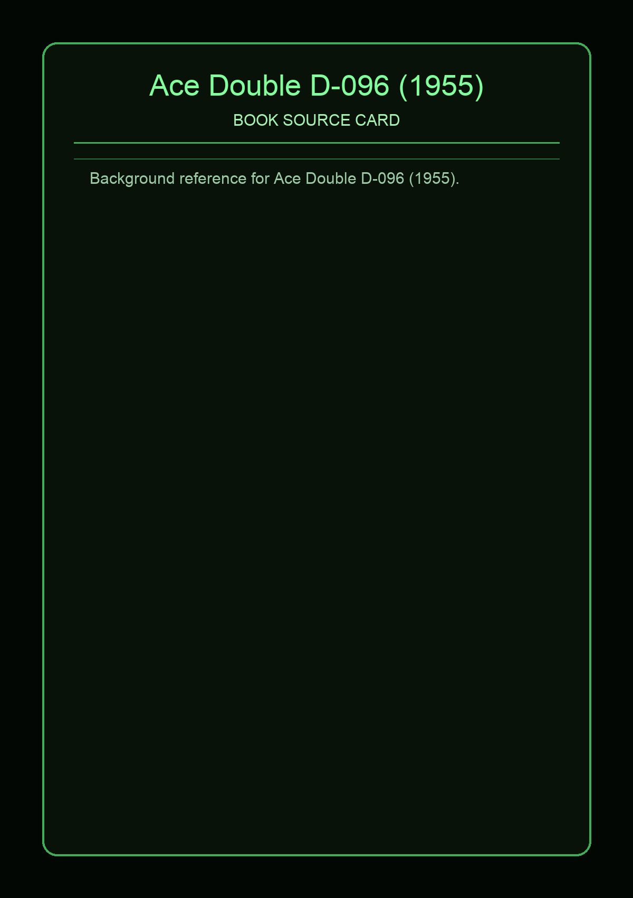

Ace Double D-096 (1955)
Source Card

Ace Double D-096 (1955) sits in the middle growth period of the D-series, when paired titles became a recognizable brand format for collectors. The dos-a-dos layout means two texts share one pocket paperback, each with its own front cover, so a single item carries two distinct entry points into the period's SF market [1][2].
For DnDex, this matters because the D-code, year, and cover pairing provide concrete signals for naming mood, genre blend, and era texture without copying any source prose directly.
Covers and Context


Reading both faces together is the key historical move: one side often leans toward immediate visual hook, while the reverse side reframes the same code as a second narrative invitation. The list and archive references let you verify exact pairings for this code-year entry [1][2].
External Links
All text above is original synthesis for DnDex; references provide direct source verification.